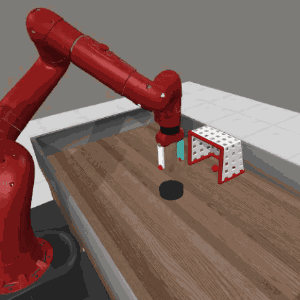
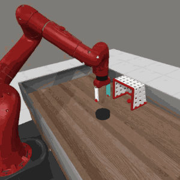

Abstract
The varying significance of distinct primitive behaviors during the policy learning process has been overlooked by prior model-free RL algorithms. Leveraging this insight, we explore the causal relationship between different action dimensions and rewards to evaluate the significance of various primitive behaviors during training. We introduce a causality-aware entropy term that effectively identifies and prioritizes actions with high potential impacts for efficient exploration. Furthermore, to prevent excessive focus on specific primitive behaviors, we analyze the gradient dormancy phenomenon and introduce a dormancy-guided reset mechanism to further enhance the efficacy of our method. Our proposed algorithm, ACE: off-policy Actor-critic with Causality-aware Entropy regularization, demonstrates a substantial performance advantage across 29 diverse continuous control tasks spanning 7 domains compared to model-free RL baselines, which underscores the effectiveness, versatility, and efficient sample efficiency of our approach.
ACE Handles Diverse Tasks
We evaluate ACE across 29 diverse continuous control tasks spanning 7 task domains: MuJoCo, MetaWorld, Deepmind Control Suite, Adroit, Shadow Dexterous Hand, Panda-gym, and ROBEL.
Here we provide visualizations of the ACE agent's behaviors on a variety tasks.


 
